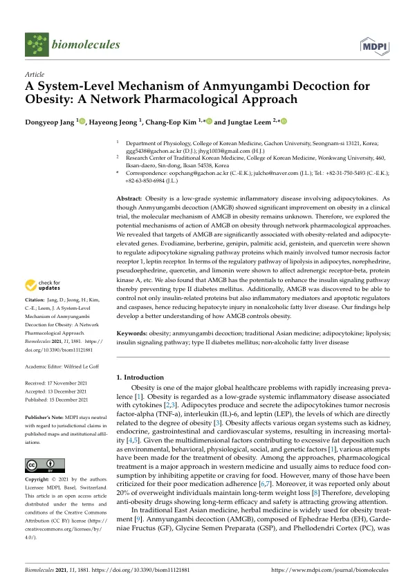

A System-Level Mechanism of Anmyungambi Decoction for Obesity: A Network Pharmacological Approach
Jang D, Jeong H, Kim CE, Leem J
Biomolecules 11(12):1881

첫 장 · 오픈액세스First page · open access
논문 소개Summary
안면감비탕은 임상시험에서 비만에 효과를 보인 복합 처방입니다. 그런데 왜 듣는지는 알려져 있지 않았습니다. 여러 약재가 여러 성분을 통해 여러 표적에 동시에 작용하는 한약에서는, 단일 성분 약물처럼 하나의 경로를 짚어 설명하기가 어렵습니다. 이 연구는 그 물음을 네트워크 약리학으로 다뤘습니다.
비만은 지방세포에서 나오는 아디포카인이 관여하는 낮은 등급의 전신 염증질환입니다. 연구진은 안면감비탕에 든 성분들의 예측 표적을 모아, 비만 관련 유전자 및 지방세포에서 발현이 높아지는 유전자와 견주었습니다. 두 집합은 유의하게 겹쳤습니다.
겹치는 자리를 따라가 보니 아디포카인 신호전달 경로가 나왔습니다. 에보디아민과 베르베린, 제니핀, 팔미트산, 제니스테인, 케르세틴이 종양괴사인자 수용체 1과 렙틴 수용체 같은 단백질을 조절하는 것으로 나타났습니다. 지방세포의 지방분해 조절 경로에서는 노르에페드린과 슈도에페드린, 케르세틴, 리모닌이 베타 아드레날린 수용체와 단백질인산화효소 A 등에 작용했습니다. 인슐린 저항성과 제2형 당뇨병, 비알코올성 지방간질환과도 유의하게 연결되어, 비만에서 비롯되는 이 질환들까지 조절할 가능성이 시사되었습니다.
이 연구가 무엇을 말하고 무엇을 말하지 않는지는 분명히 해야 합니다. 네트워크 약리학은 데이터베이스에 등록된 성분과 표적 정보를 계산으로 이어 붙여 가설을 세우는 방법입니다. 실제로 그 경로가 움직였는지를 사람이나 동물에서 확인한 것이 아닙니다. 여기서 나온 것은 검증해야 할 후보이지 입증된 기전이 아닙니다.
그래서 이 논문은 혼자 서 있지 않습니다. 같은 처방을 고지방식이 생쥐에 먹여 지방분해와 열생성 프로그램이 실제로 켜지는지 확인한 실험연구가 이어졌습니다. 계산으로 후보를 좁히고 실험으로 확인하는 순서를 밟은 것입니다.
Anmyungambi decoction is a multi-herb formula that showed effects on obesity in a clinical trial. Why it works, however, was unknown. In herbal medicine, where many herbs act through many compounds on many targets at once, a single pathway cannot be pointed to as it can with a single-compound drug. This study approached that question through network pharmacology.
Obesity is a low-grade systemic inflammatory disease involving adipocytokines. The researchers assembled the predicted targets of the compounds in Anmyungambi decoction and compared them with obesity-related genes and with genes whose expression is elevated in adipocytes. The two sets overlapped significantly.
Following that overlap led to the adipocytokine signalling pathway. Evodiamine, berberine, genipin, palmitic acid, genistein and quercetin were found to regulate proteins including tumour necrosis factor receptor 1 and the leptin receptor. In the regulatory pathway of lipolysis in adipocytes, norephedrine, pseudoephedrine, quercetin and limonin acted on the beta-adrenergic receptor and protein kinase A among others. Significant links also appeared to insulin resistance, type II diabetes mellitus and non-alcoholic fatty liver disease, suggesting the formula might also affect conditions arising from obesity.
What this study does and does not say should be stated plainly. Network pharmacology builds hypotheses by computationally joining compound and target information registered in databases. It does not confirm that those pathways actually moved in an animal or a person. What emerges is a candidate to be tested, not an established mechanism.
The paper therefore does not stand alone. An experimental study followed, feeding the same formula to high-fat-diet mice to see whether the lipolysis and thermogenesis programmes were in fact switched on. Narrowing the candidates by computation and then checking them by experiment is the order this line of work followed.
인용Cite
Jang D, Jeong H, Kim CE, Leem J. A System-Level Mechanism of Anmyungambi Decoction for Obesity: A Network Pharmacological Approach. Biomolecules. 2021;11(12):1881. doi:10.3390/biom11121881